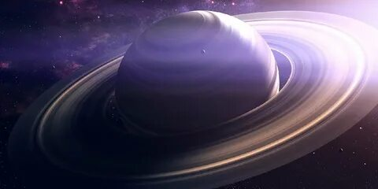
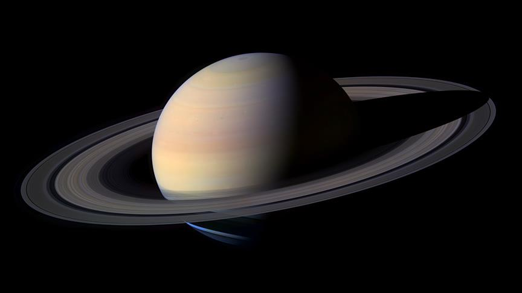

● Saturn Satürn gezegeni, güneşten en uzak altıncı ve güneş sistemindeki ikinci büyük gezegendir. Satürn, Yunan mitolojisinde Titanların efendisi Cronos’un antik Roma’daki ona karşılık olan tanrının ismiydi. Satürn, İngilizcede cumartesi kelimesinin kökünden türemiştir. Satürn’ün bir diğer özelliği ise, çıplak gözle Dünya’dan görülebilen en uzak gezegen olmasıdır. Fakat gezegenin en önemli özelliği olan Satürn’ün halkaları çıplak gözle görülemez, sadece teleskop kullanarak gözlemlenebilir. Güneş Sistemi’ndeki diğer dev gezegenlerden Jüpiter, Uranüs ve Neptün’ün de halkaları olsa da şüphesiz ki Satürn’ün halkaları diğerlerinki ile kıyaslanamayacak kadar olağanüstüdür. Satürn’ün İlginç Özellikleri ● Satürn’ün halkaları ilk keşfedildiğinde, Satürn’ün uyduları olarak biliniyordu. ● Satürn, Güneş Sistemi’ndeki yoğunluğu en düşük gezegendir. ● Satürn’ün 62 uydusu vardır. ● Satürn’ün halkaları bazen sanki kaybolmuş gibi görünür. ● Satürn çıplak gözle görülebilen en uzak gezegendir. ● Gezegenin kutup bölgesinde nedeni tam olarak bilinmeyen altıgen bir şekil görülür. Satürn Gezegeni Fiziksel Özellikleri Satürn çoğunlukla hidrojen ve helyumdan oluşan bir gaz devidir. Dev olarak adlandırılmasının sebebi ise, Dünya ile karşılaştırıldığında, 760’dan fazla Dünya’yı içine alabilecek ve Dünya’nın kütlesinin yaklaşık 95 katı kadar büyüktür. Bununla birlikte tüm gezegenler arasında Satürn’ün yoğunluğu (687 kg/m³) en düşük olanıdır. Ve ilginçtir ki sudan bile hafiftir. Şöyle örnek verelim: Eğer ki Satürn’ü içine alabilecek kadar büyük bir havuz olsaydı, Satürn batmazdı. Satürn’ün atmosferinde görülen sarı ve altın rengindeki hatlar, üst atmosferde oluşan yüksek hızlı rüzgarların sonucudur. Ayrıca bu rüzgarlar ekvatorun çevresinde gezegenin içinden yükselen ısı ile birleşerek, 1,800 km / saat hıza kadar çıkabilir. Satürn gezegeni, Jüpiter haricindeki diğer gezegenlerden daha hızlı dönüyor. Satürn’ün 1 günü yaklaşık 10.5 Dünya saatine karşılık geliyor. Bu hızlı dönüş, Satürn’ün ekvatordan şişmesine ve kutuplarında düzleşmesine neden oluyor. Gezegenin ekvator çapı, kutup çapından 13,000 kilometre daha geniştir. Satürn’ün son zamanlardaki en büyük gizemi, kuzey kutbunu çevreleyen dev altıgen olabilir. Her birinin kenarı yaklaşık 12.500 km ve neredeyse dört Dünya’yı içine alabilecek kadar büyüktür. Fakat, bazı görüşler olsa da, buna neyin sebep olduğu halen belirsizliğini koruyor. Satürn’ün atmosferinde her Satürn yılında bir kere (yaklaşık 30 Dünya yılı) dev fırtınalar ortaya çıkar. Bunun sonucunda gezegende var olan sıcaklık ve rüzgar döngülerini bozar. 1876’dan bu yana altı tane fırtına gözlemlendi. Ve bunlardan sonuncusu 2011 yılında Satürn yörüngesinde bulunan NASA’nın Cassini uzay aracı tarafından gözlemlendi. Satürn’ün Kompozisyon ve Yapısı Atmosfer kompozisyonu (Hacim olarak):% 96.3 moleküler hidrojen,% 3.25 helyum, amonyak, az miktarda metan, hidrojen deuterid, etan, amonyak hidrosülfür aerosolleri, su buzu aerosolleri ve amonyak buz aerosolleri Manyetik alan: Satürn gezegeni, Dünya’dan 578 kat daha güçlü bir manyetik alana sahiptir. Kimyasal kompozisyon: Satürn gezegeninin, muhtemelen amonyak, metan ve sudan oluşan bir dış çekirdek ile çevrelenmiş, demir ve kaya malzemelerinden oluşan sıcak katı bir iç çekirdeğe sahip olduğu düşünülüyor. Daha üst tabakasında ise, yüksek düzeyde sıkıştırılmış, sıvı metalik hidrojen tabakası, bunu takiben viskoz helyum ve hidrojen bölgesi bulunuyor. Ve atmosfere doğru yaklaşıldıkça hidrojen ve helyum tabakası gaz halini alıyor ve atmosferi ile birleşiyor. Çekirdek yapısı: Satürn’ün Dünya’dan 10-20 kat daha büyük bir çekirdeğe sahip olduğu düşünülüyor. Satürn’ün Yörüngesi Güneş’ten ortalama mesafe: 1.426.725.400 km. Dünya ile karşılaştırıldığında: Dünya’dan 9.53 kat daha uzak. Günberi (Güneş’e en yakın mesafe): 1.349.467.000 km. Dünya ile karşılaştırıldığında: Dünya’dan 9.17 kat daha uzak. Günöte (Güneş’ten uzak mesafe): 1.503.983.000 km. Dünya ile karşılaştırıldığında: Dünya’dan 9.89 kat daha uzak. Satürn’ün Uyduları Satürn’ün en az 62 uydusunun olduğu biliniyor. Gezegen ismini, antik Roma mitolojisindeki Titanların efendisinden aldığı için, Satürn’ün uydularının çoğuna diğer Titanların yanı sıra Gallic, Inuit ve Norse mitlerinden devlerin isimleri verilmiştir. Satürn’ün en büyük uydusu olan Titan, Merkür’den biraz daha büyük ve Jüpiter’in ayı Ganymede’nin ardından Güneş Sistemi’nin en büyük ikinci uydusudur. (Dünyanın uydusu Ay, beşinci büyük uydudur.) Titan çok kalın ve azot bakımından zengin bir atmosfer tarafından örtülüdür. Bu atmosferin, Dünya’da yaşamın oluşmasından çok daha öncesinde, Dünya’nın sahip olduğu gibi bir atmosfer olabileceği belirtiliyor. Fakat önemli bir farkı da bulunuyor. Çünkü, Dünyanın atmosferi uzaya yaklaşık 60 km’lik mesafedeyken, Titan da bu mesafe yaklaşık 10 kat daha fazladır. Atmosferi, Dünya’da bulunan fosil yakıtları oluşturan bir takım hidrokarbonlar ve kimyasallar içerir. Ayrıca, yakın tarihli bir çalışmada, gezegenin atmosferinde plastik üretmek için kullanılan bir kimyasal olan propilen tespit edildi. Satürn’ün bazı uyduları bir takım ilginç fiziksel özelliklere sahiptirler. Pan ve Atlas uçan bir disk gibi şekillenmiştir, Iapetus, tıpkı bir Yin ve Yang sembolü gibidir; bir tarafı kar gibi parlak ve bir tarafı kömür kadar karanlıktır. Enceladus, güney kutbunda görülen gayzerlerden belli aralıklarla su ve diğer kimyasal maddeleri dışarı atarak, buz kaplı yüzeyinin altındaki su varlığının kanıtlarını gösteriyor. Ve Prometheus ve Pandora gibi uydulara, çoban uydular ismi verilir. Çoban uydular isimlerini, halkaları yörüngelerinde tutmak için halka malzemeleriyle etkileşime girmelerinden ötürü almışlardır.